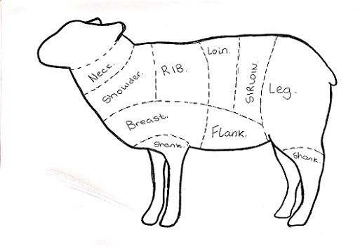

We source the finest mountain reared lamb from our specially selected partner farmers who rear grass fed sheep from the Mountain ranges in Mayo and Galway which results in the most tender of meats at the lowest of prices.

Est. 2004
We believe that every animal should have the opportunity where possible to explore its own natural environment and live a happy and healthy life as close to nature as possible. We carefully select our partner farmers ensuring that you have the highest quality produce delivered straight from the farm to you. All our meats are fully tested and are fully traceable and complies with the latest in EU regulations.
We source the finest mountain reared lamb from our specially selected partner farmers who rear grass fed sheep from the Mountain ranges in Mayo and Galway which results in the most tender of meats at the lowest of prices.

All our poultry is of the highest standards in organic farming and we are very proud of our farmers and of the hard work they do to bring the finest quality poultry to our shop. The majority of our partner farmers are found in the traditional poultry farming areas of counties Cavan & Monaghan as well as counties Meath, Louth, Limerick & Waterford.
Our beef is renowned for its quality and delicious flavor. The way we guarantee the highest quality in beef in both texture and flavor is by choosing Irish beef and the highest grade of traditional breeds of cattle. Our cattle are chosen on the basis of fat content, marbling and quality to ensure a consistency of flavour. All the beef from our butchers is completely grass fed and is matured for a minimum of 28 days to intensify beef flavour and tenderness.


We source our Freerange Pork From a Free Range Farm in Co. Carlow. Our partners are passionate about ethical farming and animal welfare which aligns with our core values. The pigs are free to roam outdoors and they can find shelter in warm, straw bedded huts, and always have access to fresh vegetation and feed them grain grown right on the farm, ensuring high quality and full traceability.